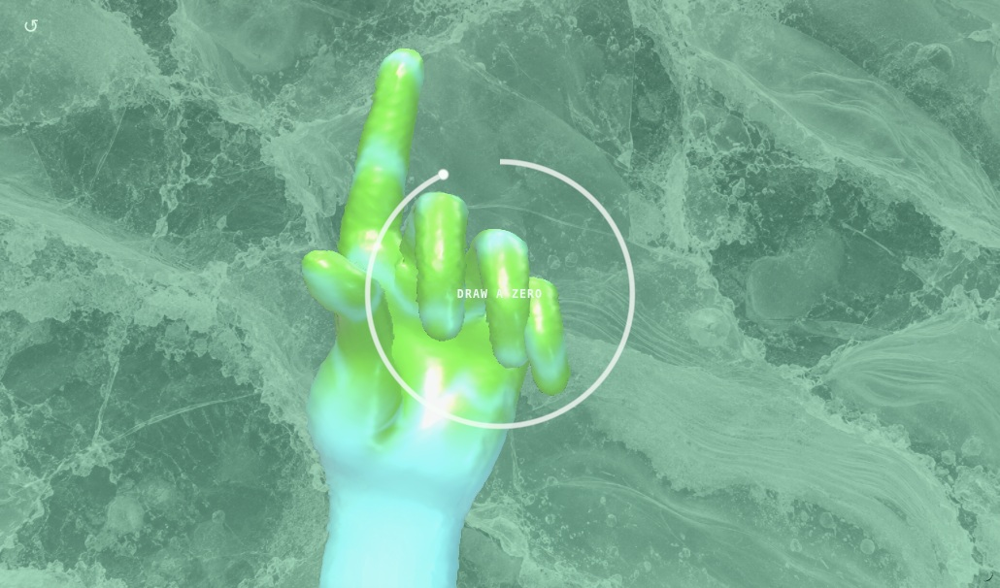
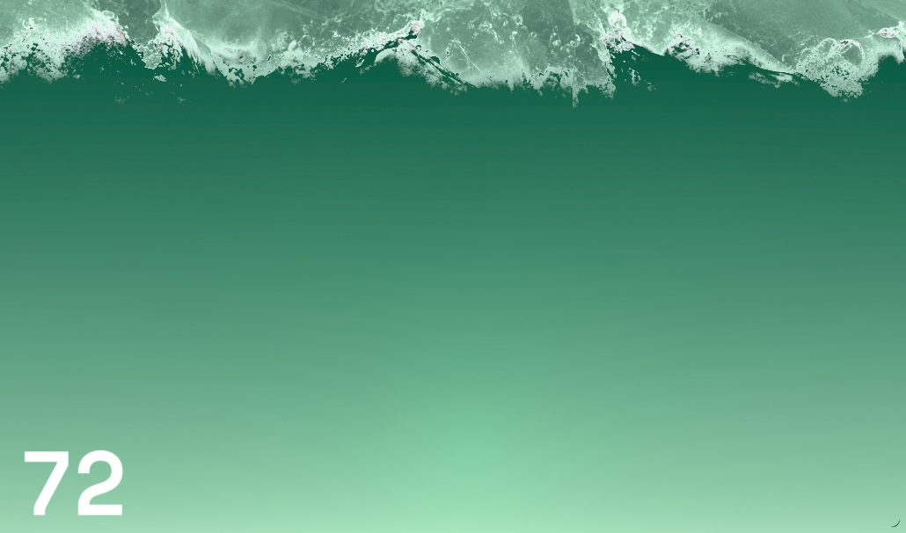
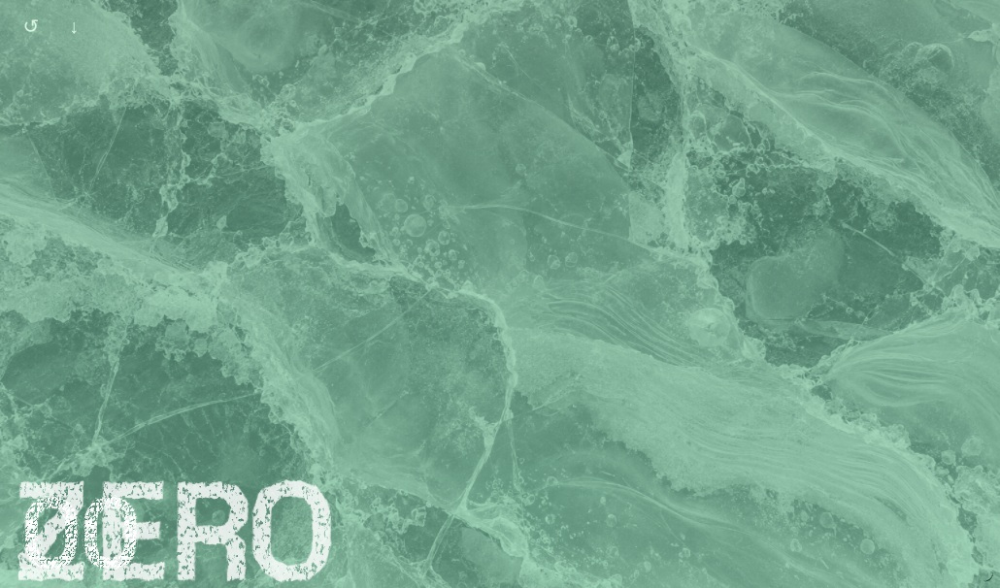
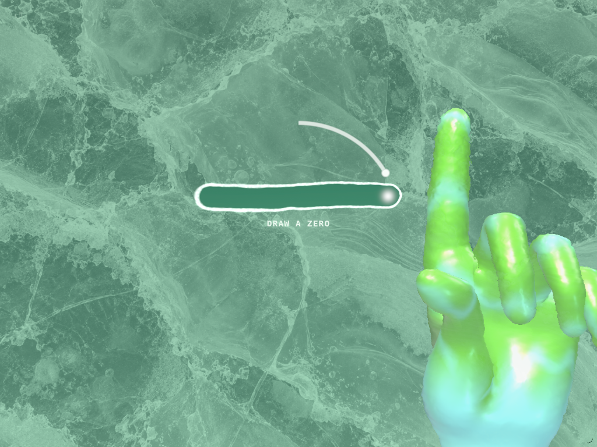
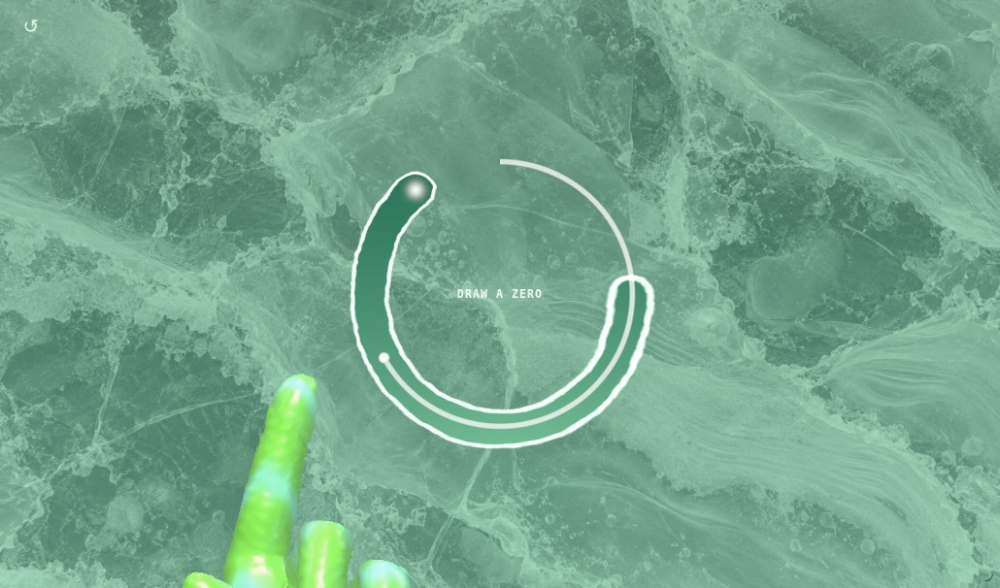
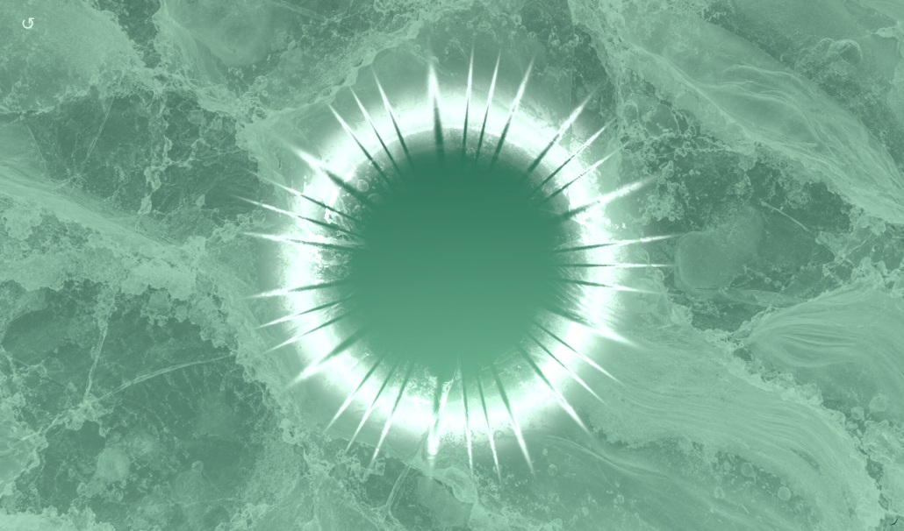
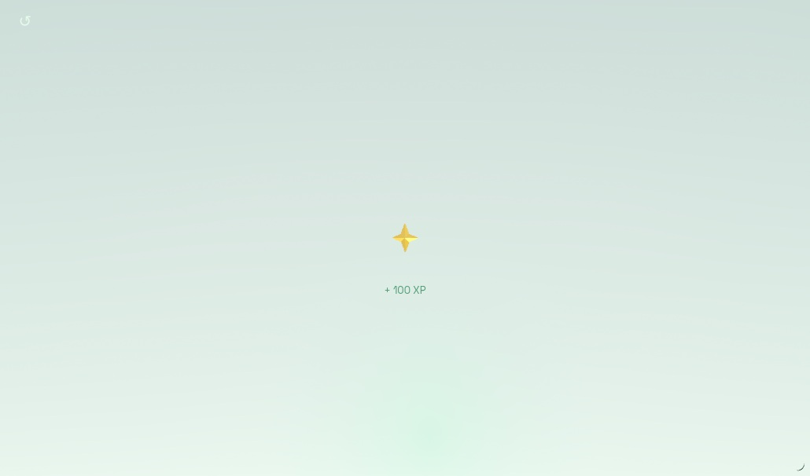
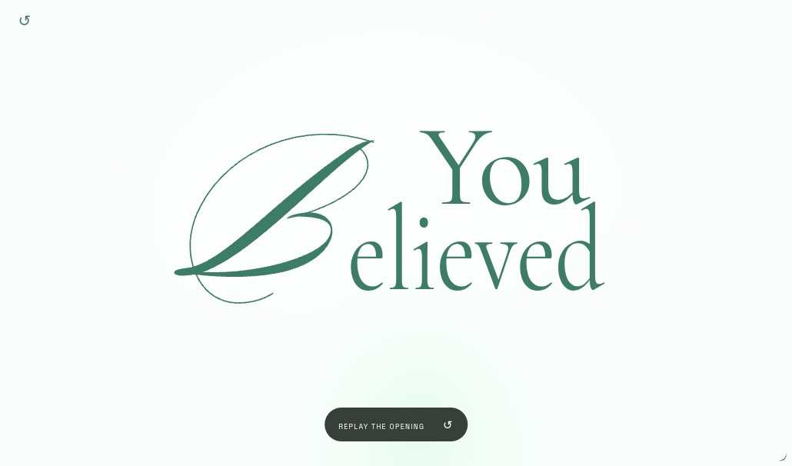

按录屏校准，
重新做这层冰。
新版重做深青绿渐变、顶部向下结霜、左下倒数及破裂、冰后伸指握拳手、白色晶体轨迹和解锁白闪。保留可操作的 WebGL 绘制与几何识别；页面不播放参考视频冒充互动。
当前仍不是像素一致：原创冰面、独立手模衍生资产和替代字形与原作有差异。完整对照和限制列在页面底部。

完整操作过程，先看连续动作。
真实 CDP 单指输入驱动同一生产控制器，以 24 fps 审核时间点取帧；没有调用成功 API、没有注入蒙版值。视频编码帧率不是 iPad 实际性能结论。
从倒数到结霜。


轨迹留在同一层冰里。


扩散、增亮，再进入白场。



仍与原作不同的地方。
| 项目 | 本轮依据与剩余差异 |
|---|---|
| 参考范围 | 两段用户录屏已成功读取并拆帧。原站与技术文章仍无法直接访问，没有声称读到了官方实现。 |
| 冰面 | 依据录屏校准色调、构图和结霜方向；具体裂缝、晶体形态使用新生成材质，和原作分布不同。 |
| 手部 | MIT 基础上细分、加厚指部并延伸腕部，独立制作握拳伸指姿态；比例、轮廓、光泽和动作还未完全相同。 |
| 字体 | 使用 SIL OFL 替代字形，花体 B 独立绘制；没有原字体文件，不能标为同一字形。 |
| 时长 | 录屏从约 78 开始，且有系统浮层；99 到该位置的原始节奏无法核验。用户绘制时长由真实输入决定。 |
| 设备 | Linux Chromium / SwiftShader、CDP 鼠标与触控模拟；尚未进行实体 iPad Safari 测试。页面可导出真实设备的性能采样。 |